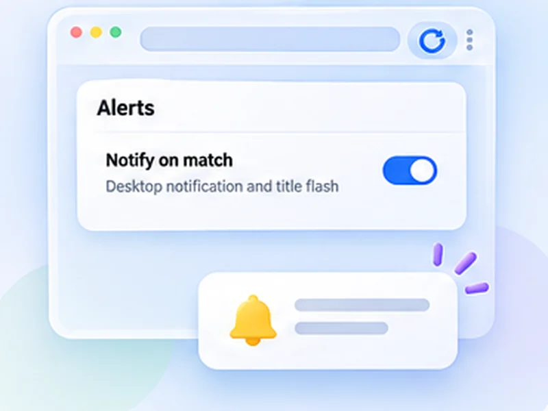

Know the moment a price changes.
Point it at the price on the page. When that number changes, refreshing stops and you get a notification.

How price changes works
Point it at the price on the page. When that number changes, refreshing stops and you get a notification.
Any change to the watched text, up or down. The alert tells you it changed; open the tab to see the new price.
Quick setup
Right-click the price, choose Inspect and note its id or class, for example #price.
Choose Stop when content changes and enter that selector.
Set an interval of a few minutes and press Start.
A price drop alert without an account
Price tracker extensions usually cover a handful of big shops and want you to sign up. This takes a simpler route: it watches the price on the exact page you have open and tells you when that number changes. It works on any site that shows a price, including flights, hotels and classifieds.
How to watch only the price
Right-click the price, choose Inspect, and note its id or class. Enter that as the selector in Stop when content changes, for example #price or .product-price. Now banners, timers and recommendations on the same page are ignored.
What you are told
That the watched text changed, not whether it went up or down. Open the tab to see the new price. There is no price history chart.
Checking politely
Prices do not change by the second. An interval of two to five minutes is plenty.
Use intervals that are reasonable for the site and only monitor pages you are allowed to access. The extension does not get around logins, queues, rate limits or other access restrictions.
A worked example: a flight price
You have a search result open showing a fare of 214. Inspect the fare and find its class, say .fare-total. Choose Stop when content changes, enter .fare-total, set Min 180 and Max 300, and press Start. The first load records the current text. When a later load shows anything different, you are notified.
Price drop alert, or any change?
The alert fires on any change to the watched text: up, down, or a change in currency formatting. It is a price change notification, not a threshold. For a watch on one item this is usually what you want, since you will look at the new figure anyway.
If you get false alerts
- Watch a tighter element. The price itself, not the whole product box.
- Avoid elements with timers such as a deal countdown.
- Check the page is stable. Some sites show a different price to signed-out visitors on alternate loads.
At a glance
- Watch only the price. A CSS selector limits the check to the price, so banners and timers are ignored.
- Any site. Shops, travel sites, classifieds: if it shows a price in the page, it can be watched.
- No account, no tracking. The check runs in your browser. No shopping data leaves it.
Questions, answered.
Is this a price tracker extension?
It alerts you when the price on a page changes. It does not keep a price history or compare shops.
Can it alert only below a target price?
No. It reports any change to the watched element.
Does it work on any shop?
On any page that shows the price as text in the page.
Why am I getting alerts when the price is the same?
Something else on the page changed. Add a CSS selector for the price so only that is watched.
Can it alert only when the price drops below a number?
No. It reports any change to the watched element.
Let the page check itself.
Use the free extension for Chrome or Firefox.
Have a different use case in mind?
Share the browser task you would like to make easier. Your idea helps guide what gets built next.